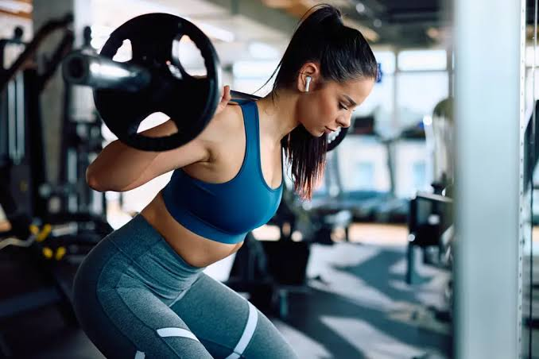
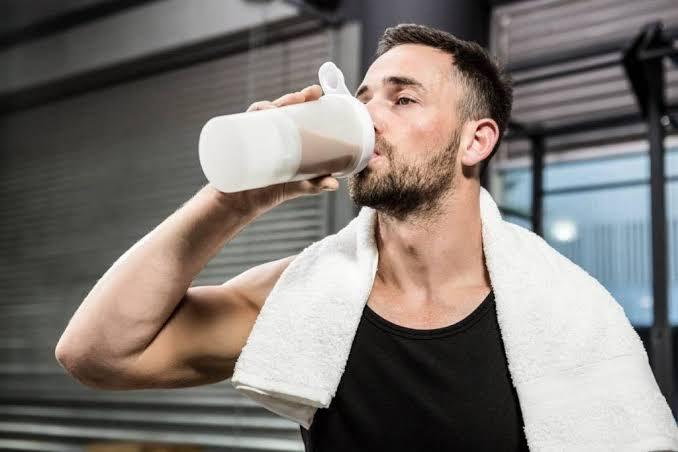
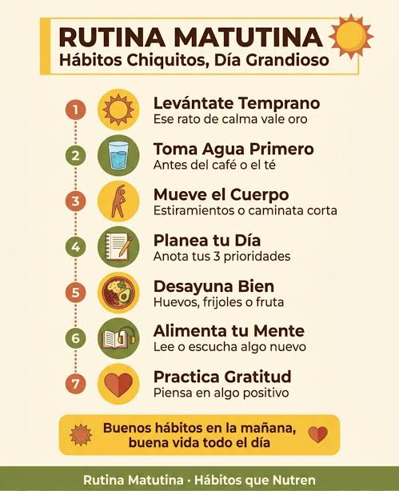
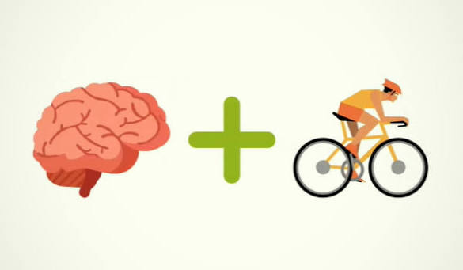

Entrenamiento de Fuerza
Descubre por qué levantar pesas es clave para quemar grasa y fortalecer tus articulaciones.
Leer másArtículos educativos y guías visuales preparadas por nuestros especialistas para potenciar tus resultados diarios.

Descubre por qué levantar pesas es clave para quemar grasa y fortalecer tus articulaciones.
Leer más
Consejos sobre qué macronutrientes consumir tras el ejercicio para acelerar la recuperación.
Leer másEstrategias sencillas para controlar los niveles de cortisol y mejorar la recuperación nocturna.
Leer más¿Cuánta agua debes beber realmente antes, durante y después de cada sesión de entrenamiento?
Leer más
Cinco rutinas rápidas por la mañana para activar tu metabolismo y mantener alta la energía.
Leer más
Cómo la actividad física regular ayuda a combatir la ansiedad y eleva tu estado de ánimo.
Leer másHistorias reales de personas que transformaron su estilo de vida con HealthyFit.
"Gracias al entrenamiento personalizado y la guía nutricional de HealthyFit logré bajar 10 kilos de grasa y ganar masa muscular de forma segura. ¡Totalmente recomendados!"
"El ambiente, la atención y el profesionalismo son increíbles. Aprendí a comer bien sin pasar hambre y mis rutinas se adaptan perfectamente a mis horarios de trabajo."
"Los programas de bienestar cambiaron mi calidad de sueño y nivel de estrés diario. El equipo siempre está pendiente de tus avances y te motiva a dar lo mejor."